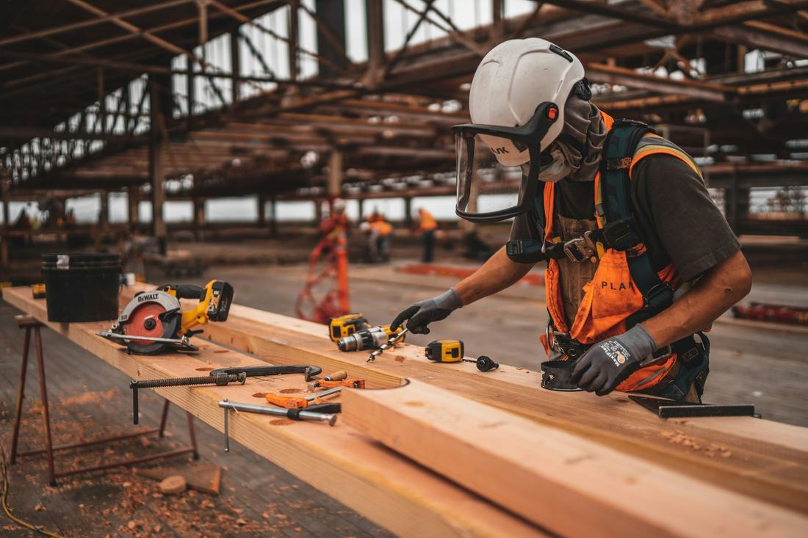

Lane BB provides civil, construction and property-improvement services for public, commercial and residential projects — coordinated with the appropriate built-environment professionals and specialists a project requires.
We work with the appropriate built-environment professionals, specialists and subcontractors when required by the scope and regulatory requirements of a project — so approvals, standards and safety are never an afterthought.
Discuss Your Project
Share your scope, location and required completion date, and we'll prepare a detailed written quotation.